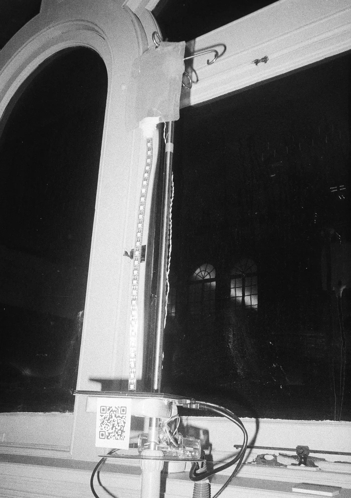
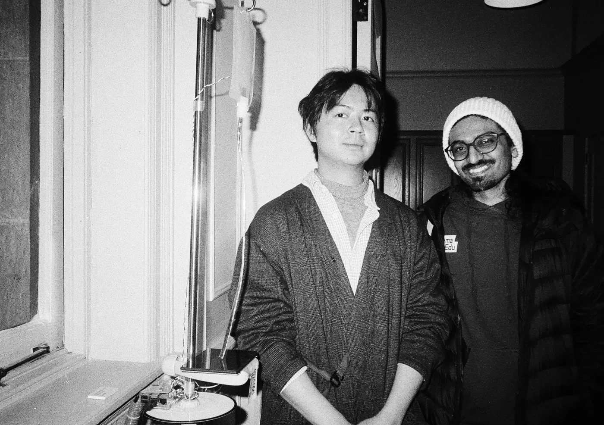
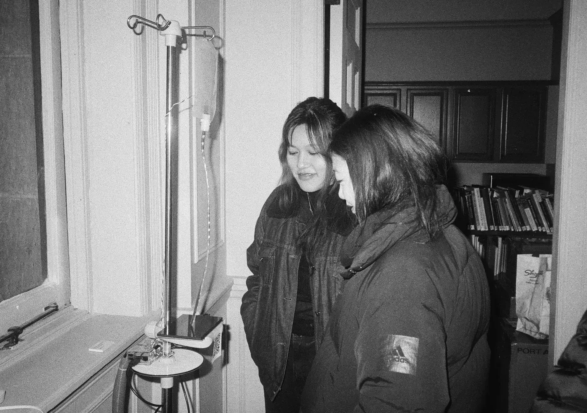
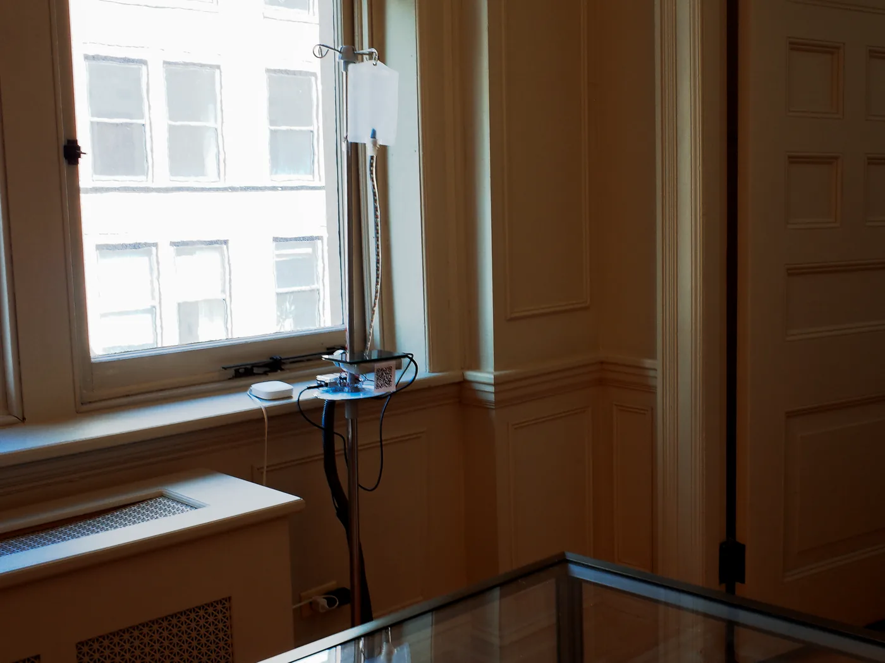
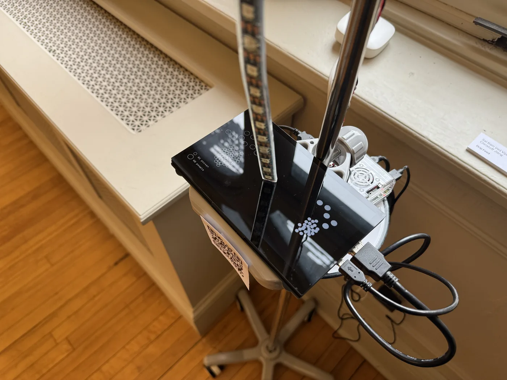
Design and Research
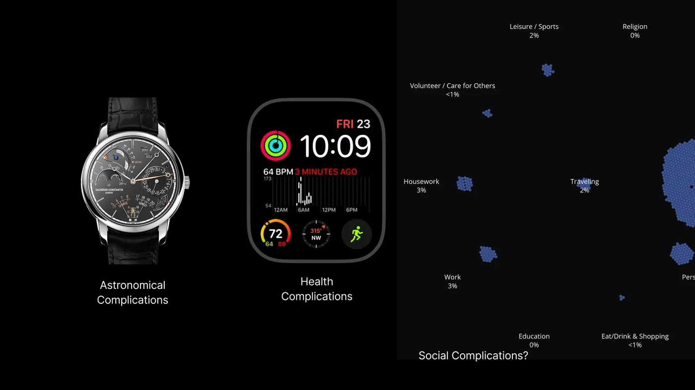
Question: How can we design a time keeping device that demonstrates social complication?
In horology, a complication is any function on a timepiece that displays information beyond basic hours, minutes, and seconds. Examples range from practical calendars, astronomical displays that show immense craftsmanship, and recent health monitors on smart watches. These complications provide users with information either about our extrinsic environment (astronomy) or about ourselves (health).
However, time is also social. Study shows that in recent years, time spent with others is decreasing, while time spent alone is increasing across the board. How can we design timekeeping devices that inform us about our interrelationship with each other? How to design a complication that links ourselves with society?
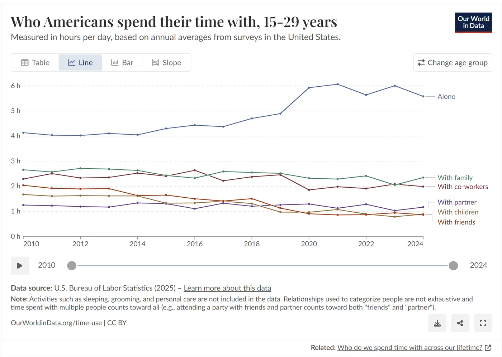
We obtained data from the American Time Use Survey (ATUS) 2024 and conducted data processing using Python. ATUS collects data on whether a person is doing an activity with someone else during a specific time frame. We used this information as well as the specific time interval to calculate, at each time frame t, what is the proportion of people spending it alone vs with others. As shown from the bar chart, there is always about half of the people spending time alone regardless of time. Evening time, around 7pm, is usually when people are spending time with others, probably since people tend to have dinner together.
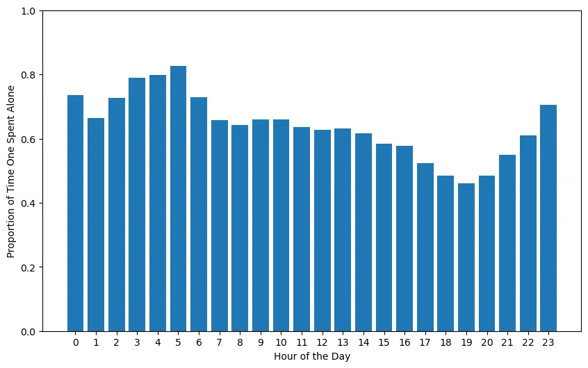
For visual references, we drew inspirations from minimal dot and pattern designs. We also studied hybrid screen-physical systems. Our interaction with society feels very tangible on a day-to-day basis, therefore we wanted our device to go beyond the digital screen display.
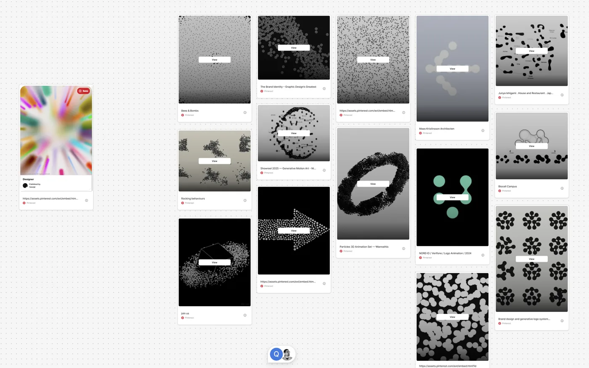
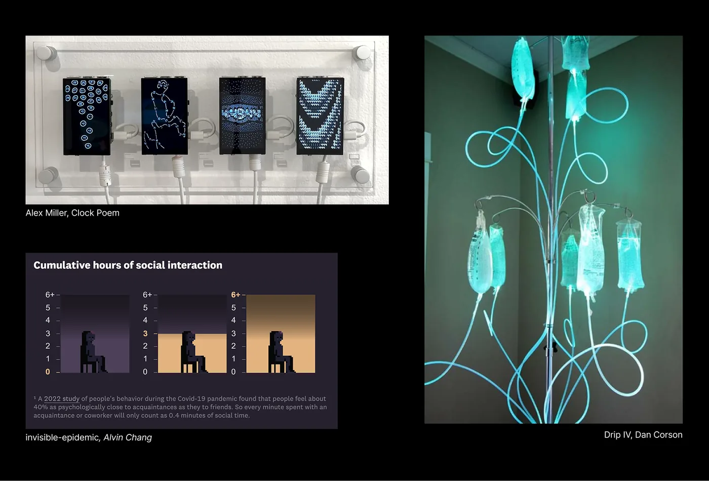
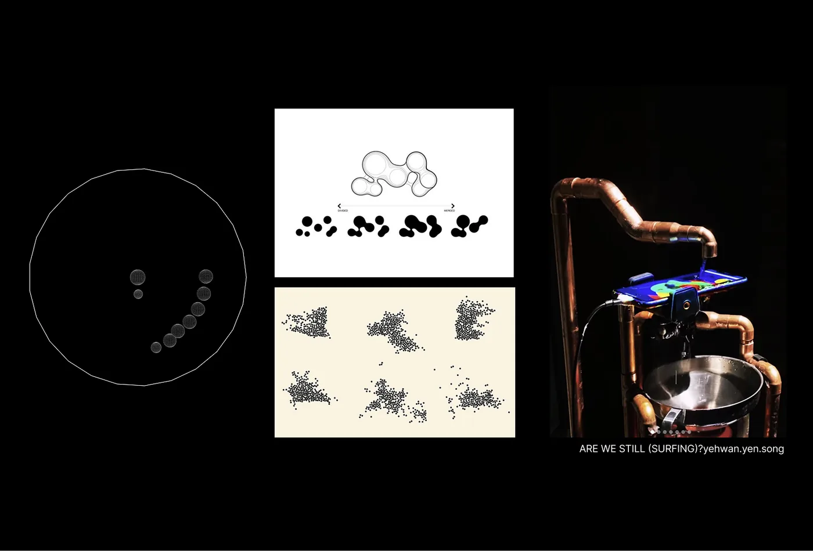
Production
The visualization is built using p5.js. Each drop represents 1 second, and a large drop represents 1 minute. Each drop also represents one person: at the current hour, the size ratio between "alone" and "with others" shows the proportion of how people decide to spend this hour.
The Raspberry Pi runs a node.js server, which controls the timing for the p5 sketch client and the Python script controlling the LED light strip.
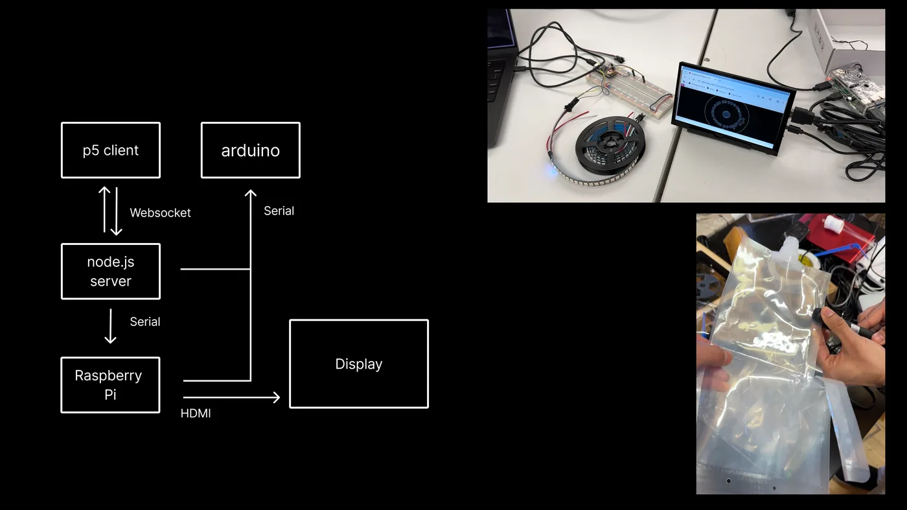
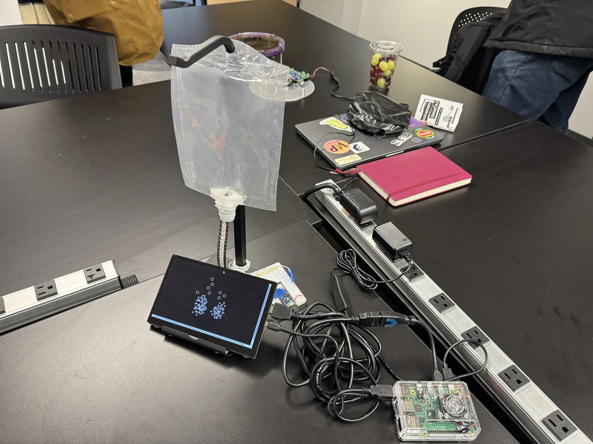
We put it onto a physical IV drip stand. It is being shown as part of the group show Complication, happening at the Horological Society of New York (HSNY) in spring 2026.
Further Reading
- Invisible Epidemic by Alvin Chang for The Pudding
- A Day in the Life (2016) by Team Triple Treat